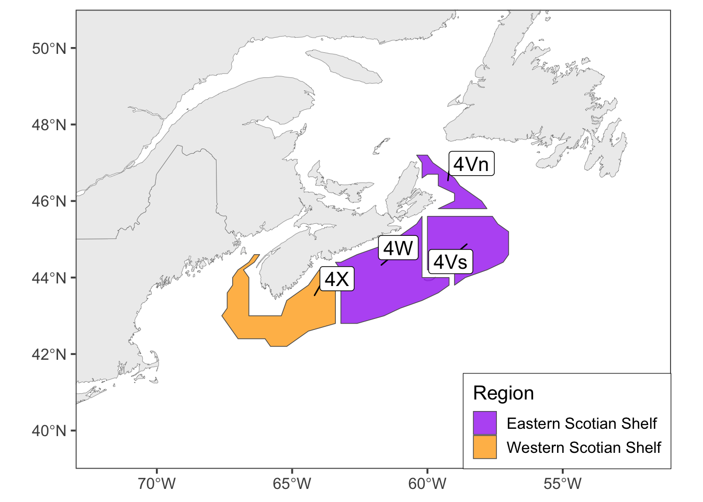

Introduction
This is a technical document summarizing information on indicators in the marea R package in Canada’s Maritimes Region. marea curates and summarizes oceanographic, environmental, and biological data resources relevant for research and stock assessment in the region. Here, we provide technical documentation, overviews, and contact information for each variable in the package.

Figure 0.1: Map of NAFO and Scotian Shelf regions portrayed in this document.
Ecological indicators in the marea package offer data at multiple resolutions. Some indicators are global-scale, providing a single value relevant to all of Canada’s Maritimes regions through time. Others are regionally-specific, with data from station-based buoys, transects, or satellite imagery summarized within individual management regions.
Throughout this document, we portray indicator data with focus on NAFO subdivisions within the Scotian Shelf region: the Eastern Scotian Shelf (NAFO Zones 4V and 4W), and the Western Scotian Shelf (NAFO Zone 4X) (Fig. 0.1).
Some indicators provide data for more areas than those shown above; such cases are noted on indicator pages (see “Additional Data” sections).